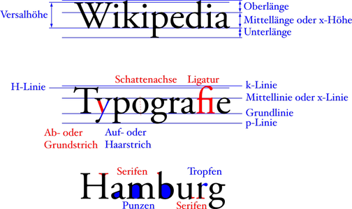
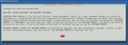
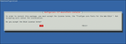

Schriftarten
Dieser Artikel wurde für die folgenden Ubuntu-Versionen getestet:
Dieser Artikel ist größtenteils für alle Ubuntu-Versionen gültig.
Zum Verständnis dieses Artikels sind folgende Seiten hilfreich:
 Heutzutage gibt es eine Vielzahl von freien Schriftarten, die benutzt werden können. Dieser Artikel stellt eine kleine Auswahl davon vor. Hier werden bevorzugt Schriften behandelt, die über die offiziellen Paketquellen zu installieren sind, und vor allem auf die Qualität der vorgestellten Schriften geachtet. Dabei spielen, neben dem Schriftbild und der Lesbarkeit, die Anzahl der Zeichen und Schnitte eine Rolle. Die schönste Schrift nützt nichts, wenn sie kein Eszett darstellen kann, und eine Brotschrift sollte auch Zeichen für exotische Umschriften enthalten. Umfangreiche Opentype Funktionalitäten und eine gute Dokumentation geben natürlich Bonuspunkte. Sollte diese Liste keine passende Schrift enthalten, kann man in einer Reihe von Webseiten über freie Schriften stöbern.
Heutzutage gibt es eine Vielzahl von freien Schriftarten, die benutzt werden können. Dieser Artikel stellt eine kleine Auswahl davon vor. Hier werden bevorzugt Schriften behandelt, die über die offiziellen Paketquellen zu installieren sind, und vor allem auf die Qualität der vorgestellten Schriften geachtet. Dabei spielen, neben dem Schriftbild und der Lesbarkeit, die Anzahl der Zeichen und Schnitte eine Rolle. Die schönste Schrift nützt nichts, wenn sie kein Eszett darstellen kann, und eine Brotschrift sollte auch Zeichen für exotische Umschriften enthalten. Umfangreiche Opentype Funktionalitäten und eine gute Dokumentation geben natürlich Bonuspunkte. Sollte diese Liste keine passende Schrift enthalten, kann man in einer Reihe von Webseiten über freie Schriften stöbern.
Zwei nützliche Begriffe im Zusammenhang mit Schriftarten:
bei Schriften mit Serifen besitzen die einzelnen Buchstaben kleine "Füßchen" (bessere Lesbarkeit). Das Gegenteil nennt sich "Sans Serif" (ohne Serifen).
bei proportionalen Schriften sind die einzelnen Buchstaben unterschiedlich breit. Das Gegenteil heißt nicht-proportional bzw. dicktengleich (Monospace).
Ein Eindruck von einigen der hier vorgestellten Schriften kann anhand eines Beispieltexts  im PDF-Format gewonnen werden. Auch der Quelltext des dazugehörigen TeX-Dokuments ist verfügbar.
im PDF-Format gewonnen werden. Auch der Quelltext des dazugehörigen TeX-Dokuments ist verfügbar.
|  |
| typografische Grundbegriffe (Bildquelle) |
Im Jahr 2011 wurde die Bezeichnung der Pakete mit Schriftarten in Debian und Ubuntu geändert: Statt ttf-schriftname werden sie jetzt mit fonts-hersteller-schriftname bezeichnet. Dabei ist die Angabe des Herstellers optional. Diese Änderungen sind teilweise ab Ubuntu 11.10 aktiv, alle Pakete sind jedoch erst ab Ubuntu 12.04 umbenannt.
Alternativ zur Paketinstallation können Schriften auch manuell installiert werden. Neben Schriften, die sich (noch) nicht in den Paketquellen befinden, kann so eine LTS-Version mit neuen Versionen von aktiv entwickelten Schriften (etwa der Linux Libertine) versorgt werden.
Wer eine gute freie Schrift kennt, ist eingeladen, sie mit einer kurzen Beschreibung hinzuzufügen. Dabei sollten ihre Charakteristika, Stärken und Schwächen, welche Schnitte sie besitzt und für welche Sprachen sie die nötigen Zeichen aufweist, beschrieben werden. Besonders nützlich wäre es, wenn diese Sammlung über das lateinische Alphabet hinaus erweitert wird.
Freie Schriftarten¶
Brotschriften¶
Schriften, in denen längere Texte gesetzt werden können, werden als "Brotschriften" bezeichnet. Sie zeichnen sich nicht nur durch gute Lesbarkeit in kleinen Schriftgraden aus, sondern bestehen meist aus mehreren, aufeinander abgestimmten, Schnitten. Damit passen Hervorhebungen in kursiven oder serifenlosen Überschriften optisch zum Textkörper.
Computer Modern¶
Computer Modern wurde von Donald E. Knuth als Standardschriftart von LaTeX entwickelt. Als klassizistische Antiqua zeigt Computer Modern einen starken Kontrast zwischen den stärksten und schwächsten Strichen eines Buchstabens. Es handelt sich um eine umfangreiche Schriftfamilie, die neben den Schriftarten den Varianten Serifen, Sans Serif und Proportional (Typewriter) noch weitere Schriften bietet. Die meisten Schriften besitzen fette und kursive Schnitte ebenso wie Kapitälchen. Der Umfang lässt mit vielen Zeichen – besonders ist auf die mathematischen Zeichen Wert gelegt worden – und dem lateinischen, kyrillischen und griechischen Alphabet keine Wünsche übrig.
Computer Modern wurde als Bitmap-Schrift entworfen und mehrmals (automatisiert) vektorisiert. Die einzelnen Varianten unterscheiden sich vor allem technisch, können jedoch leichte Abweichungen in einzelnen Zeichenformen aufweisen. Computer Modern Unicode ist eine Umsetzung in das moderne Opentype-Format. Cm-super liegt nicht in der heutigen Standardkodierung Unicode vor, weshalb stattdessen Latin Modern oder Computer Modern Unicode zu empfehlen sind.
Bei Latin Modern (lmodern) sollte man sich nicht von den unterschiedlichen Schnitten für verschiedene Schriftgrößen verwirren lassen. Bei ihnen ist die Laufweite und die Größe der Serifen an die Schriftgröße angepasst worden, um die Lesbarkeit für diese Schriftgröße zu optimieren. Wenn die gewünschte Schriftgröße nicht mit einem eigenen Schnitt vertreten ist, kann gefahrlos ein Schnitt für eine ähnliche Schriftgröße gewählt werden.
Latin Modern und cm-super lassen sich direkt aus den Paketquellen installieren:
lmodern (universe)
 mit apturl
mit apturl
Paketliste zum Kopieren:
sudo apt-get install lmodern
sudo aptitude install lmodern
cm-super (universe)
mit apturl
Paketliste zum Kopieren:
sudo apt-get install cm-super
sudo aptitude install cm-super
Das Paket für CMU steht erst ab Ubuntu 12.04 zur Verfügung, in älteren Versionen muss Computer Modern Unicode in der OpenType-Variante selbst herunterladen werden . Dann entpackt [2] man das Archiv und verschiebt die .otf-Dateien in das entsprechende Verzeichnis. Alternativ kann auch eine TrueType-Variante verwendet werden.
fonts-cmu (universe)
mit apturl
Paketliste zum Kopieren:
sudo apt-get install fonts-cmu
sudo aptitude install fonts-cmu
Weitere Schriften aus dem LaTeX-Umfeld können direkt von CTAN  -Mirrors heruntergeladen werden, unter anderem auf http://tug.ctan.org/search.html (im Suchfeld unter "Search the package descriptions" nach Begriffen wie "Font", "T1" oder "Type 1" suchen).
-Mirrors heruntergeladen werden, unter anderem auf http://tug.ctan.org/search.html (im Suchfeld unter "Search the package descriptions" nach Begriffen wie "Font", "T1" oder "Type 1" suchen).
EB Garamond¶
Georg Duffner entwickelt mit EB Garamond  eine freie Implementierung der klassischen Schriften von Claude Garamond. Die Schriftart macht starken Gebrauch der typographischen OpenType-Funktionen, zum Beispiel um Ligaturen nach historischen Varianten und den Konventionen verschiedener Sprachen einzufügen. Unterstützt werden Zeichen des lateinischen, griechischen und kyrillischen Alphabets in den Schnitten Normal, Kursiv, Kapitälchen und Initialen.
eine freie Implementierung der klassischen Schriften von Claude Garamond. Die Schriftart macht starken Gebrauch der typographischen OpenType-Funktionen, zum Beispiel um Ligaturen nach historischen Varianten und den Konventionen verschiedener Sprachen einzufügen. Unterstützt werden Zeichen des lateinischen, griechischen und kyrillischen Alphabets in den Schnitten Normal, Kursiv, Kapitälchen und Initialen.
Ab Ubuntu 14.04 kann die Schriftart (OpenType) direkt aus den Paketquellen installiert werden:
fonts-ebgaramond (universe)
fonts-ebgaramond-extra (universe)
mit apturl
Paketliste zum Kopieren:
sudo apt-get install fonts-ebgaramond fonts-ebgaramond-extra
sudo aptitude install fonts-ebgaramond fonts-ebgaramond-extra
Für ältere Ubuntu-Versionen oder wenn die Schriftart als TrueType benötigt wird, kann man sie auch direkt von der Projektseite herunterladen und manuell installieren.
Gentium¶
Gentium wurde von SIL International entwickelt, um alle in lateinischer, griechischer oder kyrillischer Schrift geschriebenen Sprachen zu unterstützen. Deshalb deckt die Schriftart einen großen Teil der Unicode-Zeichen dieser Schriften ab.
fonts-sil-gentium (universe)
fonts-sil-gentium-basic (universe)
mit apturl
Paketliste zum Kopieren:
sudo apt-get install fonts-sil-gentium fonts-sil-gentium-basic
sudo aptitude install fonts-sil-gentium fonts-sil-gentium-basic
Gentium ist eine Eigenentwicklung mit einigen leicht extravaganten Formen, zum Beispiel dem kleinen b, und eignet sich vor allem für den Druck. Gentium selbst besitzt die Schnitte "normal" und "kursiv". Die Variante Gentium Basic enthält zusätzlich fette und fett-kursive Schnitte, beschränkt sich jedoch auf einen lateinischen Zeichensatz mit den wichtigsten Zeichen (deutsche Umlaute und Eszett sind enthalten).
Libertine¶
Die Linux Libertine ist ein Neuentwurf auf der Grundlage der beliebten Schriftart „Times“. Da die Entwickler Veränderungen der Buchstaben vorgenommen haben, wirkt die Libertine im Vergleich etwas kleiner und runder und ist leicht heller. Zur Libertine gehört mit Biolinum eine serifenlose Schrift, die in Grauwert und Metrik zur Libertine passt.
ttf-linux-libertine (universe)
mit apturl
Paketliste zum Kopieren:
sudo apt-get install ttf-linux-libertine
sudo aptitude install ttf-linux-libertine
Ab Ubuntu 12.04 können Libertine und Biolinum gemeinsam als Paket installiert werden:
fonts-linuxlibertine (universe)
mit apturl
Paketliste zum Kopieren:
sudo apt-get install fonts-linuxlibertine
sudo aptitude install fonts-linuxlibertine
Unterstützt werden das lateinische, griechische, russische und hebräische Alphabet. Die Abdeckung der lateinischen Sonderzeichen ist gut, jedoch je nach Schriftschnitt unterschiedlich. An Schnitten gibt es (fast) alles, neben normal, kursiv und fett auch Kapitälchen. Hinzu kommen Sonderformen, wie eine Umrissvariante und die Biolinum für Tastaturtasten. Hervorzuheben ist auch, dass die Schriften viele Opentype-Optionen mitbringen. Die Libertine ist in stetiger Entwicklung, deshalb kann es sich lohnen, die neueste Version direkt von der Website zu installieren. PDF-Beispieldatei: Lively Alphabet - an open source coloring book
TeX Gyre (TG) Collection of Fonts¶
Das TeX Gyre -Projekt hat einige Schriftarten vektorisiert und erweitert, die von URW++ unter freie Lizenzen gestellt wurden. Diese Schriften besitzen vier Schnitte (Normal, Kursiv, Fett und Kursiv-Fett) und werden durch das Paket sowohl für den generellen Gebrauch als auch mit LaTeX-Unterstützung installiert.
tex-gyre (universe)
mit apturl
Paketliste zum Kopieren:
sudo apt-get install tex-gyre
sudo aptitude install tex-gyre
Es handelt sich um Umsetzungen einer Reihe von bekannten Schriften, die jedoch aus Lizenzgründen umbenannt wurden:
| TeX-Gyre Collection of Fonts | |
| Schriftart | Möglicher Ersatz für |
| TeX Gyre Adventor | ITC Avant Garde Gothic (Century Gothic) |
| TeX Gyre Bonum | ITC Bookman |
| TeX Gyre Chorus | ITC Zapf Chancery |
| TeX Gyre Cursor | Courier |
| TeX Gyre Heros | Helvetica |
| TeX Gyre Pagella | Palatino |
| TeX Gyre Schola | Century Schoolbook |
| TeX Gyre Termes | Times (New) Roman |
UniFraktur¶
Das Unifraktur-Projekt von mach stellt zwei Frakturschriftarten bereit. Es gibt die UnifrakturMaguntia, basierend auf einer Digitalisierung der „Berthold Mainzer Fraktur“ von Peter Wiegel, und die fettere UnifrakturCook, die auf der Digitalisierung der „Koch Fette Deutsche Schrift“ ebenfalls von Peter Wiegel basiert. Beide Schriften unterstützen Opentype-Ligaturen und sind in Unicode-konform codiert.
Da sich die Schriften nicht in den Paketquellen befinden, müssen sie separat heruntergeladen werden: UnifrakturMaguntia und UnifrakturCook
Liberation¶
Sucht man nur einen Ersatz für die Microsoft-Schriften Arial, Times New Roman und Courier, ist man bei Liberation gut aufgehoben.
fonts-liberation (universe)
mit apturl
Paketliste zum Kopieren:
sudo apt-get install fonts-liberation
sudo aptitude install fonts-liberation
Enthalten sind drei Schriften:
LiberationSans (Arial)
LiberationSerif (Times New Roman)
LiberationMono (Courier)
Bildschirmschriften¶
Diese Schriften wurden meist für die Textanzeige am Bildschirm entwickelt. Damit sie sich für längere Drucktexte eignen, bedürfen sie meist Veränderungen des Durchschusses oder andere Anpassungen.
DejaVu¶
Die DejaVu Familie wurde hauptsächlich als Bildschirmschrift entwickelt. Es entstand aus den Bitstream Vera Fonts, die unter anderem von GNOME erweitert wurden. DejaVu unterstützt das lateinische, griechische, kyrillische, armenische und georgische Alphabet. Einzelne Schnitte unterstützen auch weitere Schriften (wie Arabisch und Hebräisch), sodass fast jeder Text in dieser Schrift zumindest lesbar sein sollte.
ttf-dejavu
mit apturl
Paketliste zum Kopieren:
sudo apt-get install ttf-dejavu
sudo aptitude install ttf-dejavu
Die Familie besteht aus drei Schriften, die jeweils einige Schnitte enhalten: Serif, Sans (Serif) und Monospace.
Ubuntu¶
Die Schriftfamilie Ubuntu ist die Standardschrift in Ubuntu. Canonical will mit ihrer Hilfe auch den Wiedererkennungswert von Ubuntu steigern. Die Schriftart soll alle von Ubuntu-Nutzern benutzten Sprachen abdecken, ist jedoch noch in Entwicklung. In der von Ubuntu 11.10 verwendeten Version werden das lateinische, griechische und kyrillische Alphabet unterstützt. Als Bildschirmschrift ist Ubuntu serifenlos und kommt in drei Stärken (Light, Regular und Bold), die jeweils eine kursive Variante besitzen, daher. Daneben gibt es das schmalere Ubuntu Condensed und mit Ubuntu Mono eine nichtproportionale Variante.
Diese Schriftfamilie ist zwar standardmäßig installiert, aber ihr Paketname lautet:
ttf-ubuntu-font-family
mit apturl
Paketliste zum Kopieren:
sudo apt-get install ttf-ubuntu-font-family
sudo aptitude install ttf-ubuntu-font-family
Die nichtproportionale Variante (Mono) ist ab 12.04 über ein eigenes Paket verfügbar:
fonts-ubuntu-font-family-console
mit apturl
Paketliste zum Kopieren:
sudo apt-get install fonts-ubuntu-font-family-console
sudo aptitude install fonts-ubuntu-font-family-console
Schmuckschriften¶
Ein weiter Schrifttyp, welcher vor allem für Überschriften oder kurze Textpassagen verwendet wird, sind die Schmuckschriften. Sie sollen durch besonderes Design hervorstechen und sind etwa besonders futuristisch oder imitieren eine Schreibschrift. Meist benötigen diese Schriften einen großen Schriftgrad, um gut lesbar zu sein. Allgemein ist diese Schriftengruppe sehr heterogen.
Normschrift¶
Eine freie Schriftart für Normschrift ist osifont .
Handschriften¶
Wenn eine Comic-hafte oder handgezeichnete Anmutung gewünscht wird, können die handschriftähnlichen Grotesk-Schriften Purisa , Tomson Talks oder StayPuft verwendet werden. Pecita ist die Umsetzung einer Schreibschrift.
fonts-thai-tlwg (enthält Purisa)
mit apturl
Paketliste zum Kopieren:
sudo apt-get install fonts-thai-tlwg
sudo aptitude install fonts-thai-tlwg
fonts-tomsontalks (universe)
mit apturl
Paketliste zum Kopieren:
sudo apt-get install fonts-tomsontalks
sudo aptitude install fonts-tomsontalks
Bzw. für Versionen, die älter als 12.04 sind:
ttf-thai-tlwg (enthält Purisa)
mit apturl
Paketliste zum Kopieren:
sudo apt-get install ttf-thai-tlwg
sudo aptitude install ttf-thai-tlwg
ttf-tomsontalks (universe)
mit apturl
Paketliste zum Kopieren:
sudo apt-get install ttf-tomsontalks
sudo aptitude install ttf-tomsontalks
ttf-staypuft (universe)
mit apturl
Paketliste zum Kopieren:
sudo apt-get install ttf-staypuft
sudo aptitude install ttf-staypuft
Weitere Handschriften findet man in Schriftsammlungen unter Stichworten wie "brush calligraphy handwritten fonts", z.B. bei dafont.com .
Jura¶
Diese Schrift entstand aus der Arbeit mit einer Schrift für Kayah-Li, eine Sprache der burmesischen Minderheit der Karen. Die lateinischen Buchstaben von Jura orientieren sich am geometrischen Aufbau dieser Schrift und erhalten damit ein „futurisches“ Aussehen ähnlich der Eurostile.
Jura besitzt die Schnitte Light, Book, Medium und DemiBold und umfasst, neben Kayah-Li die meisten westeuropäischen Buchstaben, dazu einige kyrillische und griechische Zeichen.
fonts-jura (universe)
mit apturl
Paketliste zum Kopieren:
sudo apt-get install fonts-jura
sudo aptitude install fonts-jura
Bzw. für Versionen, die älter als 12.04 sind:
ttf-jura (universe)
mit apturl
Paketliste zum Kopieren:
sudo apt-get install ttf-jura
sudo aptitude install ttf-jura
Orbitron¶
Eine weitere geometrische Schrift ist Orbitron . Im Vergleich zu Jura wirkt sie futuristischer und etwas fetter, umfasst allerdings nur den nötigsten Satz an westeuropäischen Sonderzeichen. Da sich Orbitron nicht in den Paketquellen befindet, muss sie von der Homepage heruntergeladen werden.
Pecita¶
Die Schrift Pecita  (deutsche Beschreibung ) wurde von Philippe Cochy nach seiner eigenen Handschrift entworfen. Sie ist umfangreich und umfasst neben dem lateinischen Alphabet mit vielen Sonderzeichen auch die wichtigsten griechischen Zeichen. Viele Ligaturen sorgen für die richtige Verbindung der Buchstaben, trotzdem gibt es an einigen Verbindungspunkten zwischen den Buchstaben leichte Unregelmäßigkeiten.
(deutsche Beschreibung ) wurde von Philippe Cochy nach seiner eigenen Handschrift entworfen. Sie ist umfangreich und umfasst neben dem lateinischen Alphabet mit vielen Sonderzeichen auch die wichtigsten griechischen Zeichen. Viele Ligaturen sorgen für die richtige Verbindung der Buchstaben, trotzdem gibt es an einigen Verbindungspunkten zwischen den Buchstaben leichte Unregelmäßigkeiten.
Pecita ist erst ab 12.04 in den Paketquellen, kann jedoch auf http://pecita.eu/police-en.php heruntergeladen werden. Dort ist auch ein Debianpaket verlinkt.
fonts-pecita (universe)
mit apturl
Paketliste zum Kopieren:
sudo apt-get install fonts-pecita
sudo aptitude install fonts-pecita
Yanone Kaffeesatz¶
Der fette Schnitt der Yanone Kaffeesatz wurde von der Typografie der Kaffeehäuser in den 1920er Jahren inspiriert, die leichteren Schnitte hingegen wirken moderner. Kaffeesatz besitzt die Schnitte Thin, Light, Regular und Bold und umfasst einen durchschnittlichen Satz von Sonderzeichen des lateinischen Alphabets. Die Schrift kann ab 12.04 aus den Paketquellen installiert werden. Alternativ kann sie von der Website des Designers heruntergeladen werden.
fonts-yanone-kaffeesatz (universe )
mit apturl
Paketliste zum Kopieren:
sudo apt-get install fonts-yanone-kaffeesatz
sudo aptitude install fonts-yanone-kaffeesatz
Unfreie Schriftarten¶
Die hier genannten Schriften sind kostenlos, aber nicht frei, weil sie zum Beispiel nicht verändert werden dürfen. Bitte hier bei weiteren Schriften, die nicht kommerziell genutzt werden dürfen, dies deutlich bei der Beschreibung vermerken!
Larabiefonts¶
Ray Larabie hat eine umfangreiche Sammlung von Schmuckschriften, die Larabiefonts , erstellt. Obwohl diese Schriften frei verteilt und genutzt werden können, dürfen sie nur sehr begrenzt verändert werden. Details finden sich in den dem Paket beiliegenden Lizenzbestimmungen. Diese Schriften umfassen oft nur wenige Buchstaben: meist nur den westeuropäischen Zeichensatz, teilweise sind keine Umlaute enthalten. Man sollte also überprüfen, ob alle benötigten Zeichen in der gewünschten Schrift enthalten sind. Wer sich vor dem Installieren zuerst ein Bild machen will, kann dies auf http://new.myfonts.com/foundry/Larabie/ tun. Folgende Pakete werden für die Installation benötigt [1]:
ttf-larabie-deco (multiverse)
ttf-larabie-straight (multiverse)
ttf-larabie-uncommon (multiverse)
mit apturl
Paketliste zum Kopieren:
sudo apt-get install ttf-larabie-deco ttf-larabie-straight ttf-larabie-uncommon
sudo aptitude install ttf-larabie-deco ttf-larabie-straight ttf-larabie-uncommon
Windowsschriftarten¶
Reichen die Liberation-Schriften nicht aus und müssen es die Originalschriftarten von Windows XP sein, kann man diese aus den offiziellen Paketquellen nachinstallieren. Enthalten sind folgende freigegebene Schriften:
Andale Mono
Arial Black
Arial (Bold, Italic, Bold Italic)
Comic Sans MS (Bold)
Courier New (Bold, Italic, Bold Italic)
Georgia (Bold, Italic, Bold Italic)
Impact
Times New Roman (Bold, Italic, Bold Italic)
Trebuchet (Bold, Italic, Bold Italic)
Verdana (Bold, Italic, Bold Italic)
Webdings
Die Schriftart "Tahoma" wurde nicht von Microsoft freigegeben, ebenso wenig wie die neuen Schriften von Windows Vista, Windows 7 und Windows 8 (Calibri, Cambria, etc.).
Hinweis:
Die häufig nachgefragte Schrift "Helvetica" wurde vom Schweizer Grafiker Max Miedinger entwickelt und ist urheberrechtlich geschützt. Im Macintosh-Umfeld wird der Font "Helvetica" ausgeliefert, nicht aber unter Windows. Einer der Standardzeichensätze in Windows ist die Helvetica-Alternative "Arial". Die Schriften "Helvetica" und "Arial" sind sehr ähnlich, jedoch für das geübte Auge unterscheidbar (insbesondere beim großen "G"). Näheres dazu findet sich hier:
Eine gute Alternative zu Helvetica und Arial sind TeX Gyre Heros oder Arimo.
Installation¶
Ab Ubuntu 9.04 kann das folgende Paket installiert [1] werden:
ttf-mscorefonts-installer (multiverse)
mit apturl
Paketliste zum Kopieren:
sudo apt-get install ttf-mscorefonts-installer
sudo aptitude install ttf-mscorefonts-installer
|  |  |
| Eula | Bestätigung der EULA |
Die Installation benötigt die Zustimmung zu den Lizenzbedingungen. Dazu mittels Tab ⇆ zur Schaltfläche "OK" und mit ⏎ in den Folgedialog wechseln. Nach Aktivierung der Schaltfläche "Ja" mit Hilfe der Taste Tab ⇆ wird die Einhaltung der EULA mit ⏎ bestätigt.
Es gibt noch eine weitere Möglichkeit zur Installation der Windows-Schriftarten aus den Paketquellen: Bei den sogenannten ubuntu-restricted-extras handelt es sich um ein Metapaket, das neben den Schriftarten noch andere unfreie Software wie z.B. Flash und Multimedia-Codecs installiert.
Nach der Installation der Schriftarten von Microsoft kann bei Bedarf die Schriftdarstellung so eingestellt werden, dass sie der Darstellung unter Windows entspricht.
Problembehebung - Installation ohne Proxy¶
Sollten bei der Installation des Pakets Fehler wie
Fehler beim Parsen der Proxy-URL »http://:8080/«: Ungültiger Hostname. andale32.exe: No such file or directory All done, errors in processing 1 file(s) dpkg: Fehler beim Bearbeiten von ttf-mscorefonts-installer (--configure): Unterprozess post-installation script gab den Fehlerwert 1 zurück Fehler traten auf beim Bearbeiten von: ttf-mscorefonts-installer E: Sub-process /usr/bin/dpkg returned an error code (1)
auftauchen, obwohl man nirgendwo einen Proxyserver eingerichtet hat, so kann man dies lösen, indem man die Datei /var/lib/dpkg/info/ttf-mscorefonts-installer.postinst mit Root-Rechten bearbeitet [3] und die Zeilen
db_get ttf-mscorefonts-installer/http_proxy http_proxy=$RET
auskommentiert. Die Zeilen müssten danach also so
# db_get ttf-mscorefonts-installer/http_proxy # http_proxy=$RET
aussehen. Nun kann die Paketverwaltung über den Befehl [2]
sudo dpkg --configure -a
dazu veranlasst werden, die Installation der Windows-Schriftarten zu beenden.
Problembehebung - Installation mit Proxy¶
In verschiedenen Foren ist häufig zu lesen, dass es Probleme bei der Installation unter Verwendung eines Proxy-Servers gibt. Es scheint so, dass sich das Postinstall- Skript nicht den richtigen Proxy heraussucht. Eine mögliche Lösung ist, den Proxy fest im Postinstall-Skript zu setzen. Dazu wird in einem Editor mit Root-Rechten die Datei /var/lib/dpkg/info/ttf-mscorefonts-installer.postinst bearbeitet und die Zeile:
export http_proxy
durch folgende Zeile zu ersetzen:
export http_proxy=http://<IP_DES_PROXYS>:<PORT>/
Dabei bitte den abschließenden "/" nicht vergessen.
Direkt von Windows kopieren¶
Sofern man parallel zu Linux auch noch ein Windows installiert hat, startet man Windows und sucht zuerst den Ordner (normalerweise C:\Windows\Fonts bzw. C:\WinNT\Fonts) mit den Schriften: "Start -> Suchen", Suchbegriff ist *.ttf. Dann markiert man alle gefundenen TTF-Dateien oder jene, die man auch in Linux verwenden möchte, und kopiert sie in einen Ordner (z.B. Fonts) auf dem Laufwerk, auf das man auch unter Linux-Zugriff hat. Alternativ kann auch ein USB-Stick als Transportmedium dienen. Danach kann man sie wie im Artikel Schriften beschrieben einbinden.
Problembehebung - Schriftarten werden nicht heruntergeladen¶
Seit Ubuntu 16.04 funktioniert das Herunterladen der Schriftarten durch das Paket ttf-mscorefonts-installer wegen veränderter Pfade nicht mehr. Abhilfe schafft hier das Debian-Paket:
wget http://ftp.de.debian.org/debian/pool/contrib/m/msttcorefonts/ttf-mscorefonts-installer_3.6_all.deb sudo dpkg -i ttf-mscorefonts-installer_3.6_all.deb
Links¶
 Übersichts- und Grundlagenartikel
Übersichts- und Grundlagenartikel{kind=link}
Extern¶
Google Webfonts
stellt freie Schriftarten für die Einbindung in Webseiten zu Verfügung. Es ist auch möglich, die Schriften für die Installation herunterzuladen. Hervorzuheben sind die guten Möglichkeiten, einen Eindruck von den Schriften zu bekommen: Sowohl der Zeichenumfang als auch Beispiel-Layouts lassen sich anzeigen.Getting Started
– Anleitung zur Nutzung in eigenen WebseitenTypeCatcher - Google Webfonts offline nutzen (ab Ubuntu 13.10 in den offiziellen Paketquellen enthalten)
Font Library.org
– eine Sammlung von freien SchriftenFont Squirrel.com
- Sammlung freier oder frei nutzbarer SchriftartenThe League of Moveabletype
– stellt einige besonders ausgewählte Schriftarten vorImpallari.com
– Website eines kleinen Teams argentinischer Designer von Open Source-Schriftendafont.com
 – eine von vielen Fontsammlungen im Internet, aber hier sind auch explizite Angaben zu den Nutzungsbedingungen einzelner Schriftarten vorhanden
– eine von vielen Fontsammlungen im Internet, aber hier sind auch explizite Angaben zu den Nutzungsbedingungen einzelner Schriftarten vorhandenComplete Guide to Pre-Installed Fonts in Linux, Mac, and Windows
– Vergleich der unterschiedlichen vorinstallierten Schriftarten vom Standpunkt eines Webdesigners ausFont Awesome
- freie Schrift, die nur aus Symbolen besteht
- Erstellt mit Inyoka
-
 2004 – 2017 ubuntuusers.de • Einige Rechte vorbehalten
2004 – 2017 ubuntuusers.de • Einige Rechte vorbehalten
Lizenz • Kontakt • Datenschutz • Impressum • Serverstatus -
Serverhousing gespendet von